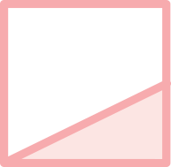
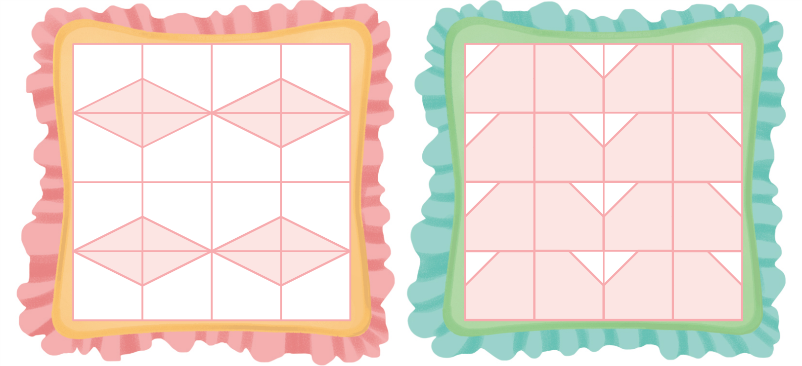
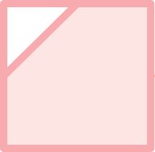

밀기, 뒤집기, 돌리기를 이용하여 방석에 규칙적인 무늬를 만들어 봅시다.
꾸러미 8
그림
을
클릭
하세요.
예
예
더 알아보기
더 알아보기
 모양으로 만든 무늬에는 어떤 규칙이 있나요?

모양을 오른쪽으로 뒤집기 했고, 만든 모양을 아래쪽으로 뒤집기 했습니다.
모양을 이용하여 어떠한 규칙으로 무늬를 꾸밀 수 있을까요?
모양을 오른쪽으로 뒤집는 것을 반복해서 모양을 만들고, 그 모양을 아래쪽으로 뒤집어서 무늬를 만들 수 있습니다.
모양을 아래쪽으로 뒤집는 것을 반복해서 모양을 만들고, 그 모양을 오른쪽으로 뒤집어서 무늬를 만들 수 있습니다.
 모양을 이용하여 어떠한 규칙으로 무늬를 꾸밀 수 있을까요?
모양을 오른쪽으로 뒤집는 것을 반복해서 모양을 만들고, 그 모양을 아래쪽으로 밀어서 무늬를 만들 수 있습니다.
모양을 시계 방향으로 90°만큼 돌리는 것을 반복해서 모양을 만들고, 그 모양을 오른쪽과 아래쪽으로 밀어서 무늬를 만들 수 있습니다.